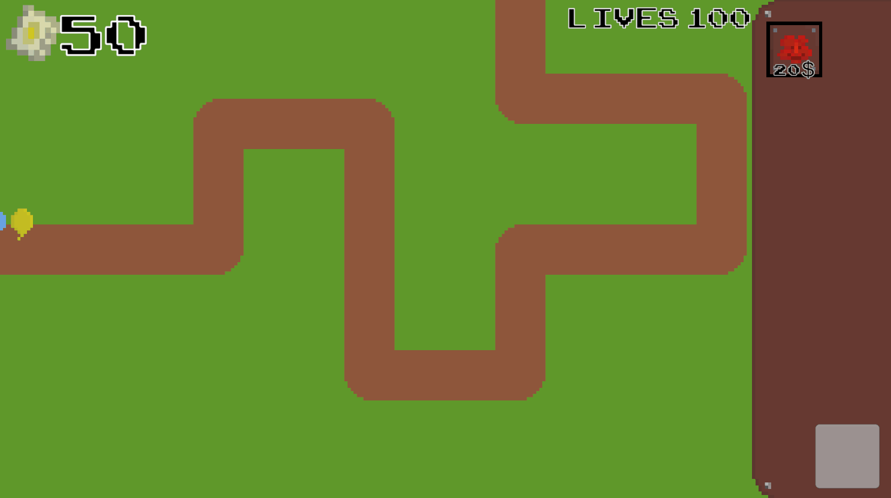
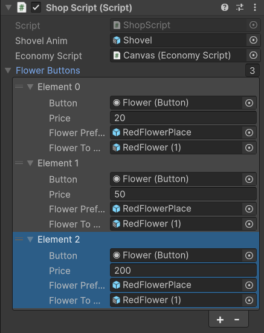
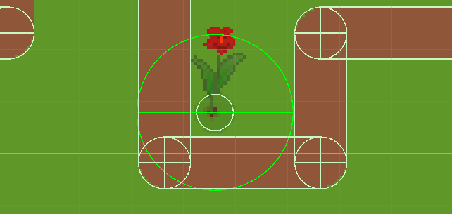

Plants VS Balloons is a 2D pixel art tower defense. You can place plants to shoot down the balloons. You gain coins by popping balloons.

The main focus of this project was to make the main mechanics modular and easy to use/expand. For example the Shop script is made in a way that you can easily add new plants to the shop just by adding a new "flower button" and adding the corresponding plant prefabs. This goal felt important to me because I want to be able to easily add new content to the game without having to change a lot of code. This also makes it easier for other people to add content to the game without having to understand a lot of code. In every new project I start I am always trying to make the code and usability just like this one.
This is a showcase of how the plants and the map work. The white circle under the plant is the size of the plant. This makes it so you can't place plants on top of each other and prevents the user from placing a plant on the path {Other white outlines}. The yellow circle is the range of the plant. That's how far the plant will shoot at a balloon.

Dev: 1 Current Development time: 2 months Engine: Unity Github: GithubLink This Game is finished.